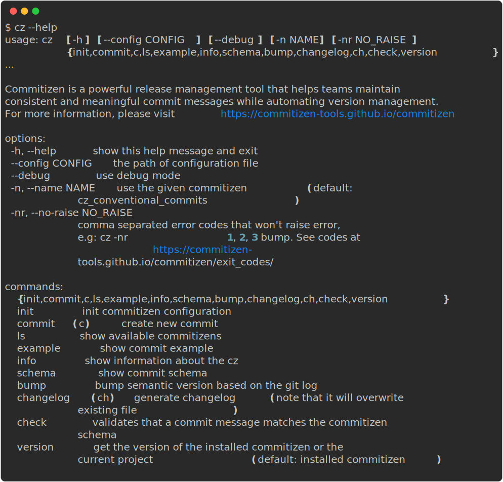

Introduction


About¶
Commitizen is a powerful release management tool that helps teams maintain consistent and meaningful commit messages while automating version management.
What Commitizen Does¶
By enforcing standardized commit conventions (defaulting to Conventional Commits), Commitizen helps teams:
- Write clear, structured commit messages
- Automatically manage version numbers using semantic versioning
- Generate and maintain changelogs
- Streamline the release process
Key Benefits¶
With just a simple cz bump command, Commitizen handles:
- Version Management: Automatically bumps version numbers and updates version files based on your commit history
- Changelog Generation: Creates and updates changelogs following the Keep a changelog format
- Commit Standardization: Enforces consistent commit message formats across your team
This standardization makes your commit history more readable and meaningful, while the automation reduces manual work and potential errors in the release process.
Features¶
- Interactive CLI for standardized commits with default Conventional Commits support
- Intelligent version bumping using Semantic Versioning
- Automatic keep a changelog generation
- Built-in commit validation with pre-commit hooks
- Customizable commit rules and templates
- Multi-format version file support
- Custom rules and plugins via pip
Getting Started¶
Requirements¶
Before installing Commitizen, ensure you have:
Installation¶
Global Installation (Recommended)¶
The recommended way to install Commitizen is using pipx or uv, which ensures a clean, isolated installation:
Using pipx:
# Install Commitizen
pipx install commitizen
# Keep it updated
pipx upgrade commitizen
Using uv:
# Install commitizen
uv tool install commitizen
# Keep it updated
uv tool upgrade commitizen
(For macOS users) Using Homebrew:
brew install commitizen
Project-Specific Installation¶
You can add Commitizen to your Python project using any of these package managers:
Using pip:
pip install -U commitizen
Using conda:
conda install -c conda-forge commitizen
Using Poetry:
# For Poetry >= 1.2.0
poetry add commitizen --group dev
# For Poetry < 1.2.0
poetry add commitizen --dev
Using uv:
uv add commitizen
Using pdm:
pdm add -d commitizen
Basic Commands¶
Initialize Commitizen¶
To get started, you'll need to set up your configuration. You have two options:
-
Use the interactive setup:
cz init -
Manually create a configuration file (
.cz.tomlorcz.toml):[tool.commitizen] version = "0.1.0" update_changelog_on_bump = true
Create Commits¶
Create standardized commits using:
cz commit
# or use the shortcut
cz c
To sign off your commits:
cz commit -- --signoff
# or use the shortcut
cz commit -- -s
For more commit options, run cz commit --help.
Version Management¶
The most common command you'll use is:
cz bump
This command:
- Bumps your project's version
- Creates a git tag
- Updates the changelog (if
update_changelog_on_bumpis enabled) - Updates version files
You can customize:
For all available options, see the bump command documentation.
Advanced Usage¶
Get Project Version¶
# Get your project's version (instead of Commitizen's version)
cz version -p
# Preview changelog changes
cz changelog --dry-run "$(cz version -p)"
This command is particularly useful for automation scripts and CI/CD pipelines.
For example, you can use the output of the command cz changelog --dry-run "$(cz version -p)" to notify your team about a new release in Slack.
Pre-commit Integration¶
Commitizen can automatically validate your commit messages using pre-commit hooks.
-
Add to your
.pre-commit-config.yaml:--- repos: - repo: https://github.com/commitizen-tools/commitizen rev: master # Replace with latest tag hooks: - id: commitizen - id: commitizen-branch stages: [pre-push] -
Install the hooks:
pre-commit install --hook-type commit-msg --hook-type pre-push
| Hook | Recommended Stage |
|---|---|
| commitizen | commit-msg |
| commitizen-branch | pre-push |
Note: Replace
masterwith the latest tag to avoid warnings. You can automatically update this with:pre-commit autoupdate
For more details about commit validation, see the check command documentation.
Help & Reference¶
Command Line Interface¶
Commitizen provides a comprehensive CLI with various commands. Here's the complete reference:

Quick Reference¶
| Command | Description | Alias |
|---|---|---|
cz init |
Initialize Commitizen configuration | - |
cz commit |
Create a new commit | cz c |
cz bump |
Bump version and update changelog | - |
cz changelog |
Generate changelog | cz ch |
cz check |
Validate commit messages | - |
cz version |
Show version information | - |
Additional Resources¶
Getting Help¶
For each command, you can get detailed help by adding --help:
cz commit --help
cz bump --help
cz changelog --help
For more details, visit our documentation site.
Setting up bash completion¶
Commitizen supports command-line completion through argcomplete, which is automatically installed as a dependency. This feature provides intelligent auto-completion for all Commitizen commands and options.
Supported Shells¶
- Bash: Full support
- Zsh: Limited support
- Fish: Limited support
- Tcsh: Limited support
Installation Methods¶
Global Installation (Recommended)¶
If you installed Commitizen globally (e.g., using pipx or brew), you can enable global completion:
# Enable global completion for all Python applications
sudo activate-global-python-argcomplete
User-Specific Installation¶
For a user-specific installation that persists across sessions:
# Add to your shell's startup file (e.g., ~/.bashrc, ~/.zshrc)
register-python-argcomplete cz >> ~/.bashrc
Temporary Installation¶
For one-time activation in your current shell session:
# Activate completion for current session only
eval "$(register-python-argcomplete cz)"
Verification¶
After installation, you can verify the completion is working by:
- Opening a new terminal session
- Typing
czfollowed by a space and pressingTABtwice - You should see a list of available commands
For more detailed information about argcomplete configuration and troubleshooting, visit the argcomplete documentation.
Sponsors¶
These are our cool sponsors!